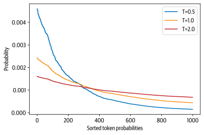
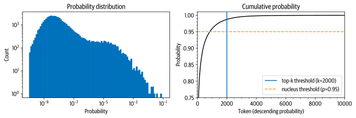

# Uncomment and run this cell if you're on Colab or Kaggle
# !git clone https://github.com/nlp-with-transformers/notebooks.git
# %cd notebooks
# from install import *
# install_requirements()
# hide
from utils import *
setup_chapter()
Using transformers v4.11.3
Using datasets v1.13.0
Using accelerate v0.5.1
Text Generation#


The Challenge with Generating Coherent Text#

Greedy Search Decoding#
# hide_output
import torch
from transformers import AutoTokenizer, AutoModelForCausalLM
device = "cuda" if torch.cuda.is_available() else "cpu"
model_name = "gpt2-xl"
tokenizer = AutoTokenizer.from_pretrained(model_name)
model = AutoModelForCausalLM.from_pretrained(model_name).to(device)
# hide_output
import pandas as pd
input_txt = "Transformers are the"
input_ids = tokenizer(input_txt, return_tensors="pt")["input_ids"].to(device)
iterations = []
n_steps = 8
choices_per_step = 5
with torch.no_grad():
for _ in range(n_steps):
iteration = dict()
iteration["Input"] = tokenizer.decode(input_ids[0])
output = model(input_ids=input_ids)
# Select logits of the first batch and the last token and apply softmax
next_token_logits = output.logits[0, -1, :]
next_token_probs = torch.softmax(next_token_logits, dim=-1)
sorted_ids = torch.argsort(next_token_probs, dim=-1, descending=True)
# Store tokens with highest probabilities
for choice_idx in range(choices_per_step):
token_id = sorted_ids[choice_idx]
token_prob = next_token_probs[token_id].cpu().numpy()
token_choice = (
f"{tokenizer.decode(token_id)} ({100 * token_prob:.2f}%)"
)
iteration[f"Choice {choice_idx+1}"] = token_choice
# Append predicted next token to input
input_ids = torch.cat([input_ids, sorted_ids[None, 0, None]], dim=-1)
iterations.append(iteration)
pd.DataFrame(iterations)
| Input | Choice 1 | Choice 2 | Choice 3 | Choice 4 | Choice 5 | |
|---|---|---|---|---|---|---|
| 0 | Transformers are the | most (8.53%) | only (4.96%) | best (4.65%) | Transformers (4.37%) | ultimate (2.16%) |
| 1 | Transformers are the most | popular (16.78%) | powerful (5.37%) | common (4.96%) | famous (3.72%) | successful (3.20%) |
| 2 | Transformers are the most popular | toy (10.63%) | toys (7.23%) | Transformers (6.60%) | of (5.46%) | and (3.76%) |
| 3 | Transformers are the most popular toy | line (34.38%) | in (18.20%) | of (11.71%) | brand (6.10%) | line (2.69%) |
| 4 | Transformers are the most popular toy line | in (46.28%) | of (15.09%) | , (4.94%) | on (4.40%) | ever (2.72%) |
| 5 | Transformers are the most popular toy line in | the (65.99%) | history (12.42%) | America (6.91%) | Japan (2.44%) | North (1.40%) |
| 6 | Transformers are the most popular toy line in the | world (69.26%) | United (4.55%) | history (4.29%) | US (4.23%) | U (2.30%) |
| 7 | Transformers are the most popular toy line in ... | , (39.73%) | . (30.64%) | and (9.87%) | with (2.32%) | today (1.74%) |
input_ids = tokenizer(input_txt, return_tensors="pt")["input_ids"].to(device)
output = model.generate(input_ids, max_new_tokens=n_steps, do_sample=False)
print(tokenizer.decode(output[0]))
Transformers are the most popular toy line in the world,
max_length = 128
input_txt = """In a shocking finding, scientist discovered \
a herd of unicorns living in a remote, previously unexplored \
valley, in the Andes Mountains. Even more surprising to the \
researchers was the fact that the unicorns spoke perfect English.\n\n
"""
input_ids = tokenizer(input_txt, return_tensors="pt")["input_ids"].to(device)
output_greedy = model.generate(input_ids, max_length=max_length,
do_sample=False)
print(tokenizer.decode(output_greedy[0]))
In a shocking finding, scientist discovered a herd of unicorns living in a
remote, previously unexplored valley, in the Andes Mountains. Even more
surprising to the researchers was the fact that the unicorns spoke perfect
English.
The researchers, from the University of California, Davis, and the University of
Colorado, Boulder, were conducting a study on the Andean cloud forest, which is
home to the rare species of cloud forest trees.
The researchers were surprised to find that the unicorns were able to
communicate with each other, and even with humans.
The researchers were surprised to find that the unicorns were able
Beam Search Decoding#

0.5 ** 1024
5.562684646268003e-309
import numpy as np
sum([np.log(0.5)] * 1024)
-709.7827128933695
import torch.nn.functional as F
def log_probs_from_logits(logits, labels):
logp = F.log_softmax(logits, dim=-1)
logp_label = torch.gather(logp, 2, labels.unsqueeze(2)).squeeze(-1)
return logp_label
def sequence_logprob(model, labels, input_len=0):
with torch.no_grad():
output = model(labels)
log_probs = log_probs_from_logits(
output.logits[:, :-1, :], labels[:, 1:])
seq_log_prob = torch.sum(log_probs[:, input_len:])
return seq_log_prob.cpu().numpy()
logp = sequence_logprob(model, output_greedy, input_len=len(input_ids[0]))
print(tokenizer.decode(output_greedy[0]))
print(f"\nlog-prob: {logp:.2f}")
In a shocking finding, scientist discovered a herd of unicorns living in a
remote, previously unexplored valley, in the Andes Mountains. Even more
surprising to the researchers was the fact that the unicorns spoke perfect
English.
The researchers, from the University of California, Davis, and the University of
Colorado, Boulder, were conducting a study on the Andean cloud forest, which is
home to the rare species of cloud forest trees.
The researchers were surprised to find that the unicorns were able to
communicate with each other, and even with humans.
The researchers were surprised to find that the unicorns were able
log-prob: -87.43
output_beam = model.generate(input_ids, max_length=max_length, num_beams=5,
do_sample=False)
logp = sequence_logprob(model, output_beam, input_len=len(input_ids[0]))
print(tokenizer.decode(output_beam[0]))
print(f"\nlog-prob: {logp:.2f}")
In a shocking finding, scientist discovered a herd of unicorns living in a
remote, previously unexplored valley, in the Andes Mountains. Even more
surprising to the researchers was the fact that the unicorns spoke perfect
English.
The discovery of the unicorns was made by a team of scientists from the
University of California, Santa Cruz, and the National Geographic Society.
The scientists were conducting a study of the Andes Mountains when they
discovered a herd of unicorns living in a remote, previously unexplored valley,
in the Andes Mountains. Even more surprising to the researchers was the fact
that the unicorns spoke perfect English
log-prob: -55.23
output_beam = model.generate(input_ids, max_length=max_length, num_beams=5,
do_sample=False, no_repeat_ngram_size=2)
logp = sequence_logprob(model, output_beam, input_len=len(input_ids[0]))
print(tokenizer.decode(output_beam[0]))
print(f"\nlog-prob: {logp:.2f}")
In a shocking finding, scientist discovered a herd of unicorns living in a
remote, previously unexplored valley, in the Andes Mountains. Even more
surprising to the researchers was the fact that the unicorns spoke perfect
English.
The discovery was made by a team of scientists from the University of
California, Santa Cruz, and the National Geographic Society.
According to a press release, the scientists were conducting a survey of the
area when they came across the herd. They were surprised to find that they were
able to converse with the animals in English, even though they had never seen a
unicorn in person before. The researchers were
log-prob: -93.12
Sampling Methods#
#hide_input
#id temperature
#alt Token probabilities as a function of temperature
#caption Distribution of randomly generated token probabilities for three selected temperatures
import matplotlib.pyplot as plt
import numpy as np
def softmax(logits, T=1):
e_x = np.exp(logits / T)
return e_x / e_x.sum()
logits = np.exp(np.random.random(1000))
sorted_logits = np.sort(logits)[::-1]
x = np.arange(1000)
for T in [0.5, 1.0, 2.0]:
plt.step(x, softmax(sorted_logits, T), label=f"T={T}")
plt.legend(loc="best")
plt.xlabel("Sorted token probabilities")
plt.ylabel("Probability")
plt.show()

# hide
torch.manual_seed(42);
output_temp = model.generate(input_ids, max_length=max_length, do_sample=True,
temperature=2.0, top_k=0)
print(tokenizer.decode(output_temp[0]))
In a shocking finding, scientist discovered a herd of unicorns living in a
remote, previously unexplored valley, in the Andes Mountains. Even more
surprising to the researchers was the fact that the unicorns spoke perfect
English.
While the station aren protagonist receive Pengala nostalgiates tidbitRegarding
Jenny loclonju AgreementCON irrational �rite Continent seaf A jer Turner
Dorbecue WILL Pumpkin mere Thatvernuildagain YoAniamond disse *
Runewitingkusstemprop});b zo coachinginventorymodules deflation press
Vaticanpres Wrestling chargesThingsctureddong Ty physician PET KimBi66 graz Oz
at aff da temporou MD6 radi iter
# hide
torch.manual_seed(42);
output_temp = model.generate(input_ids, max_length=max_length, do_sample=True,
temperature=0.5, top_k=0)
print(tokenizer.decode(output_temp[0]))
In a shocking finding, scientist discovered a herd of unicorns living in a
remote, previously unexplored valley, in the Andes Mountains. Even more
surprising to the researchers was the fact that the unicorns spoke perfect
English.
The scientists were searching for the source of the mysterious sound, which was
making the animals laugh and cry.
The unicorns were living in a remote valley in the Andes mountains
'When we first heard the noise of the animals, we thought it was a lion or a
tiger,' said Luis Guzman, a researcher from the University of Buenos Aires,
Argentina.
'But when
Top-k and Nucleus Sampling#
# hide
torch.manual_seed(42);
# hide
input_txt = """In a shocking finding, scientist discovered \
a herd of unicorns living in a remote, previously unexplored \
valley, in the Andes Mountains. Even more surprising to the \
researchers was the fact that the unicorns spoke perfect English.\n\n
"""
input_ids = tokenizer(input_txt, return_tensors="pt")["input_ids"].to(device)
# hide
import torch.nn.functional as F
with torch.no_grad():
output = model(input_ids=input_ids)
next_token_logits = output.logits[:, -1, :]
probs = F.softmax(next_token_logits, dim=-1).detach().cpu().numpy()
# hide_input
#id distribution
#alt Probability distribution of next token prediction.
#caption Probability distribution of next token prediction (left) and cumulative distribution of descending token probabilities
import matplotlib.pyplot as plt
import numpy as np
fig, axes = plt.subplots(1, 2, figsize=(10, 3.5))
axes[0].hist(probs[0], bins=np.logspace(-10, -1, 100), color="C0", edgecolor="C0")
axes[0].set_xscale("log")
axes[0].set_yscale("log")
axes[0].set_title("Probability distribution")
axes[0].set_xlabel("Probability")
axes[0].set_ylabel("Count")
#axes[0].grid(which="major")
axes[1].plot(np.cumsum(np.sort(probs[0])[::-1]), color="black")
axes[1].set_xlim([0, 10000])
axes[1].set_ylim([0.75, 1.01])
axes[1].set_title("Cumulative probability")
axes[1].set_ylabel("Probability")
axes[1].set_xlabel("Token (descending probability)")
#axes[1].grid(which="major")
axes[1].minorticks_on()
#axes[1].grid(which='minor', linewidth='0.5')
top_k_label = 'top-k threshold (k=2000)'
top_p_label = 'nucleus threshold (p=0.95)'
axes[1].vlines(x=2000, ymin=0, ymax=2, color='C0', label=top_k_label)
axes[1].hlines(y=0.95, xmin=0, xmax=10000, color='C1', label=top_p_label, linestyle='--')
axes[1].legend(loc='lower right')
plt.tight_layout()

# hide
torch.manual_seed(42);
output_topk = model.generate(input_ids, max_length=max_length, do_sample=True,
top_k=50)
print(tokenizer.decode(output_topk[0]))
In a shocking finding, scientist discovered a herd of unicorns living in a
remote, previously unexplored valley, in the Andes Mountains. Even more
surprising to the researchers was the fact that the unicorns spoke perfect
English.
The wild unicorns roam the Andes Mountains in the region of Cajamarca, on the
border with Argentina (Picture: Alamy/Ecole Nationale Supérieure d'Histoire
Naturelle)
The researchers came across about 50 of the animals in the valley. They had
lived in such a remote and isolated area at that location for nearly a thousand
years that
# hide
torch.manual_seed(42);
output_topp = model.generate(input_ids, max_length=max_length, do_sample=True,
top_p=0.90)
print(tokenizer.decode(output_topp[0]))
In a shocking finding, scientist discovered a herd of unicorns living in a
remote, previously unexplored valley, in the Andes Mountains. Even more
surprising to the researchers was the fact that the unicorns spoke perfect
English.
The scientists studied the DNA of the animals and came to the conclusion that
the herd are descendants of a prehistoric herd that lived in Argentina about
50,000 years ago.
According to the scientific analysis, the first humans who migrated to South
America migrated into the Andes Mountains from South Africa and Australia, after
the last ice age had ended.
Since their migration, the animals have been adapting to